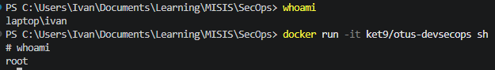
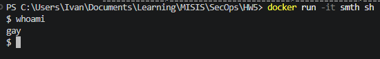
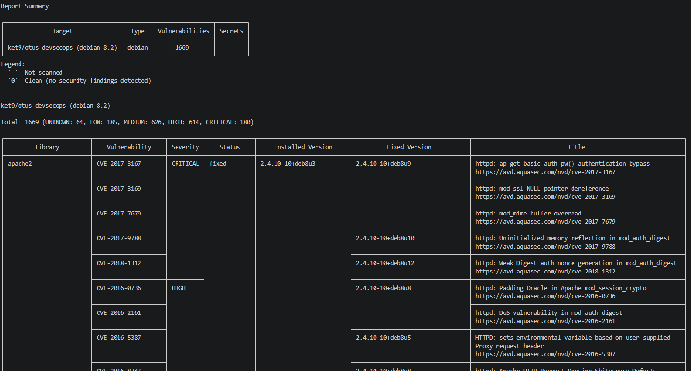

HOLY FUCK THAT IS A LOT

* и там ещё огромная таблица внизуОбраз, конечно, жутко дырявый и в прод его выкатывать, конечно, можно, но, вероятно, только один раз. Судя по всему, большинство этих уязвимостей — давным давно обнаруженные и пропатченные дыры в разных компонентах образа. Вывод, который можно сделать — надо по возможности обновлять используемые компоненты до последней версии и стараться минимизировать их количество.